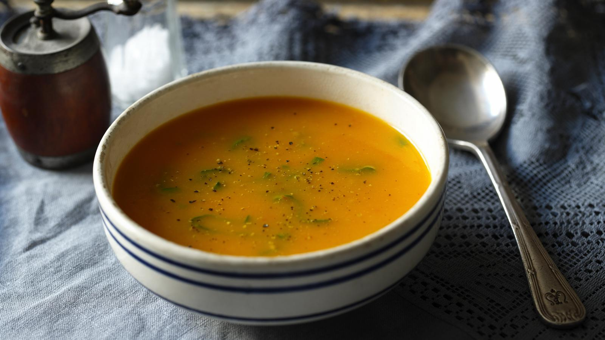

Home
Fresh Tomato Soup

Description
This fresh and simple tomato soup recipe is perfect for using up a glut
of homegrown tomatoes.
Taken from BBC Food.
Ingredients
- 2 tbsp olive oil
- 2 onions, chopped
- 1 carrot, peeled and diced finely
- 1 garlic clove, crushed
- 1 celery stick, finely chopped
- 450g/1lb fresh ripe tomatoes, halved
- 1 tsp sugar
- 1 litre/1¾ pints vegetable stock
- handful fresh basil, shredded (optional)
- salt and freshly ground black pepper
Steps
- Heat the oil in a large saucepan and add the onions, carrot, garlic
and celery. Cover and cook gently for 10 minutes until soft.
- Add the tomatoes and sugar. Season with salt and pepper, stir and
cook for another 5 minutes.
- Add the stock, bring to the boil and simmer for 10 minutes.
Liquidise until smooth. If using the basil, stir in just before
serving.